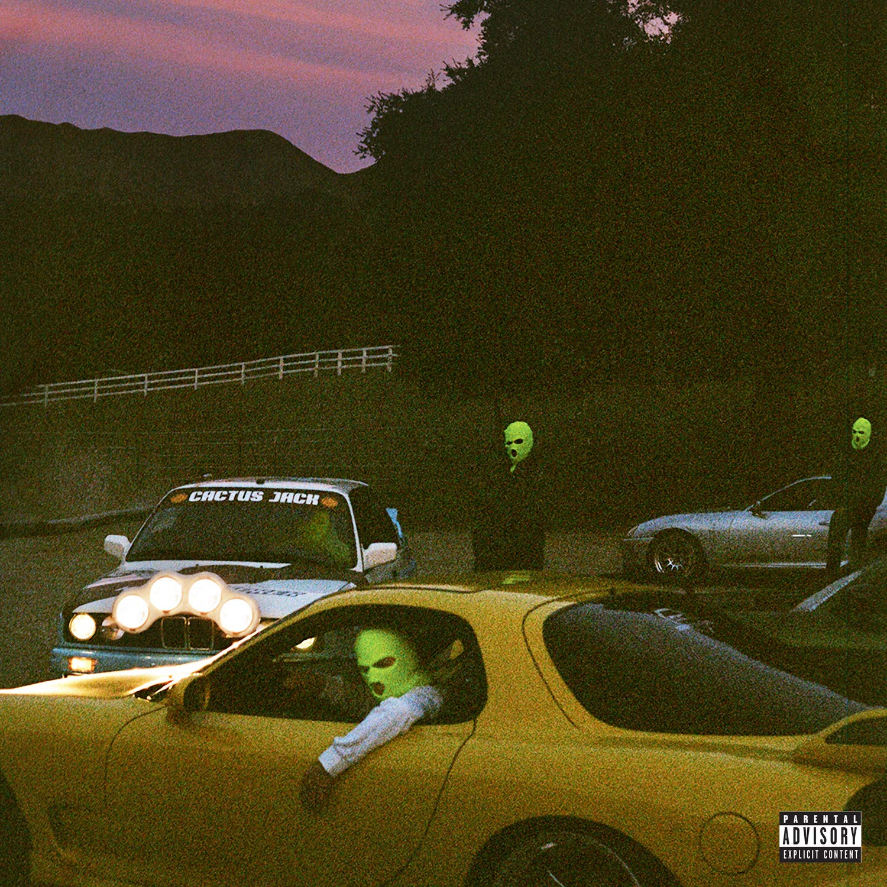
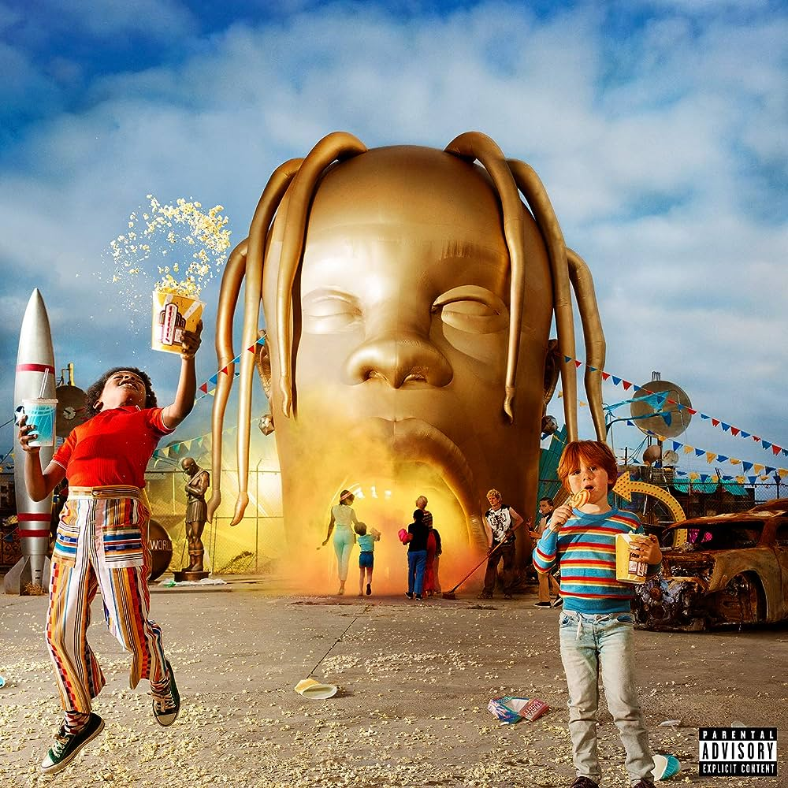
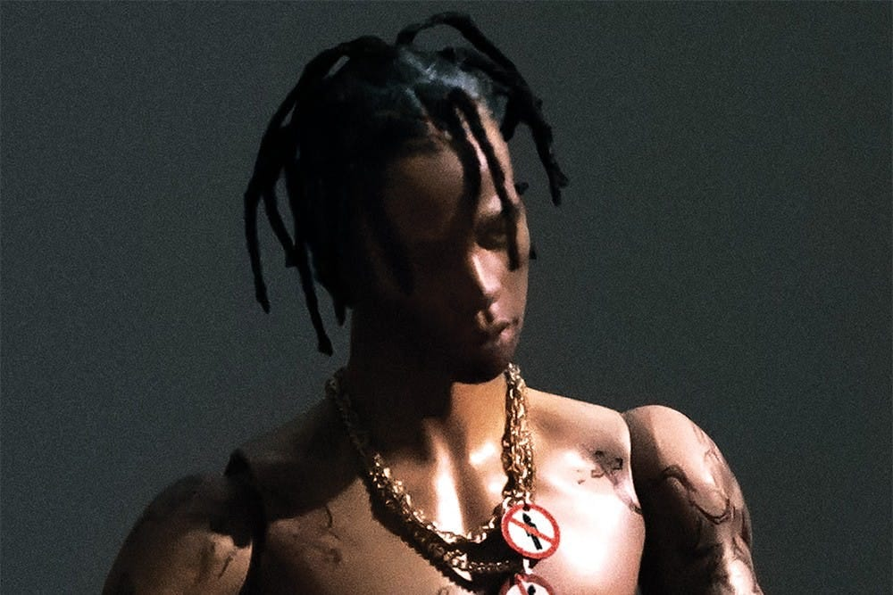

Utopia le quatrième album studio du rappeur américain Travis Scott, sorti le 28 juillet 2023, sur les labels Epic Records et Cactus Jack.
L'album fait suite au troisième album studio de Laflame, Astroworld (2018)
Les sons avec les plus écoutés:
4. My Eyes 4:11min
Fe!n Avec Playboi Carti 4:19min
10. I Know? 3:31 min
Tout les sons de l'album:
1. Hyaena 3:42min
2. Thank God 3:04min
3. Modern Jam avec la participation Teezo Touchdown 4:15min
4. My Eyes 4:11min
5. God's Country 2:07min
6. Sirens 3:24min
7. Meltdown avec la participation Drake 4:06min
8. Fe!n avec la participation Playboi Carti 4:19min
9. Delresto (echoes) avec la participation Beyoncé) 4:34min
10. I Know? 3:31 min
11. Topia Twins avec la participation de 21 Savage & Rob49 3:43 min
12. Circus Maximus (participation The Weeknd & Swae Lee) 4:18min
13. Parasail (participation Yung Lean & Dave Chappelle) 2:34min
14. Skitzo (participation Young Thug) 6:06min
15. Lost Forever (participation James Blake & Westside Gunn) 2:43min
16. Looove (participation Kid Cudi) 3:46min
17. K-POP (participation Bad Bunny & The Weeknd) 3:05min
18. Telekinesis (participation Future & SZA) 5:53min
19. Til Further Notice (participation 21 Savage & James Blake) 5:14min

JACKBOYS
JACKBOYS est une compilation collaborative du label américain Cactus Jack Records, sous le nom de JACKBOYS,
dirigé par le rappeur américain Travis Scott. Il est sorti via Cactus Jack Records aux côtés d'Epic Records le 27 décembre 2019.
Les sons avec les plus écoutés:
1. "Highest in the Room "
4:04
5. "Out West" (avec Young Thug)
2:37
7. "Gatti" (avec les JackBoys et Pop Smoke)
3:01
TRACKLIST:
1. "Highest in the Room "
4:04
2. "JackBoys" (avec les JackBoys)
0:46
3. "Gang Gang" (avec les JackBoys et Sheck Wes)
4:04
4. "Had Enough" (avec Don Toliver Quavo et Offset)
2:37
5. "Out West" (avec Young Thug)
2:37
6. "What to Do?" (avec Don Toliver)
4:10
7. "Gatti" (avec les JackBoys et Pop Smoke)
3:01

Astroworld
Astroworld est le troisième album studio du rappeur américain Travis Scott.
Il est sorti le 3 août 2018 via Cactus Jack Records 6 et Grand Hustle Records, et distribué par Epic Records.
Birds in the Trap Sing McKnight (2016), et à son album collaboratif avec Quavo, Huncho Jack, Jack Huncho (2017).
Les sons avec les plus écoutés:
5. "Beibs in the Trap" avec Nav
3:33
9. "Goosebumps" avec Kendrick Lamar
4:03
11. "Pick Up the Phone" avec Young Thug
4:12
TRACKLIST:
1. "The Ends" (avec André 3000)
3:21
2. "Way Back"
4:32
3. "Coordinate" (avec Blac Youngsta)
3:46
4. "Through the Late Night" (avec Kid Cudi)
4:46
5. "Beibs in the Trap" (avec Nav)
3:33
6. "SDP Interlude"
3:11
7. "Sweet Sweet"
3:42
8. "Outside" (avec 21 Savage)
9. "Goosebumps" (avec Kendrick Lamar)
4:03
10. "First Take" (avec Bryson Tiller)
5:13
11. "Pick Up the Phone" (avec Young Thug et Quavo)
4:12
12. "Lose"
3:20
13. "Guidance" (avec K. Forest)
3:27
14. "Wonderful" (avec the Weeknd)
3:36

Rodeo
Rodeo est le premier album studio du rappeur américain Travis Scott. Il est sorti le 4 septembre 2015
via Grand Hustle Records et distribué par Epic Records. L'album présente des apparitions
d'invités
Les sons avec les plus écoutés:
3. "3500" (Avec Future and 2 Chainz)
7:41
5. "90210" (featuring Kacy Hill)
5:39
9. "Antidote"
4:22
1. "Pornography"
3:51
2. "Oh My Dis Side" (Avec Quavo)
5:51
3. "3500" (Avec Future and 2 Chainz)
7:41
4. "Wasted" (Avec Juicy J)
3:55
5. "90210" (Avec Kacy Hill)
5:39
6. "Pray 4 Love" (Avec the Weeknd)
5:07
7. "Nightcrawler" (Avec Swae Lee and Chief Keef)
5:21
8. "Piss on Your Grave" (Avec Kanye West)
2:46
9. "Antidote"
4:22
10. "Impossible"
4:02
11. "Maria I'm Drunk" (Avec Justin Bieber and Young Thug)
5:49
12. "Flying High" (Avec Toro y Moi)
3:28
13. "I Can Tell"
3:55
14. "Apple Pie"
3:39
Edition Deluxe (songs bonus)
15. "Ok Alright" (Avec Schoolboy Q)
Metro Boomin
6:57
16. "Never Catch Me"
2:56
Days before rodeo
Days before rodeo est l'ep sortie en Aout 2014 de Travis Scott avant son album rodeo censé introduire
son premier album studio j'aimerais dire que c'est son meilleure albums avec mes sons favoris tel que
"Skyfall", "Basement freestyle" et surtout "Drugs you should try it"la meilleure de toutes.
Les sons avec les plus écoutés:
2. "Mamacita" (Avec Rich Homie Quan and Young Thug)
4:35
4. "Drugs You Should Try It"
3:29
10. "Backyard"
4:31
1. "Days Before Rodeo: The Prayer" 3:22
2. "Mamacita" (Avec Rich Homie Quan and Young Thug)
4:35
3. "Quintana Pt. 2"
4:59
4. "Drugs You Should Try It"
3:29
5. "Don't Play" (Avec Big Sean and The 1975)
4:46
6. "Skyfall" (Avec Young Thug)
5:19
7. "Zombies"
4:20
8. "Sloppy Toppy" (Avec Migos and Peewee Longway)
4:34
9. "Basement Freestyle"
4:08
10. "Backyard"
4:31
11. "Grey"
3:48
12. "BACC" (Song bonus) 2:13
Owl pharaon
Owl Pharaoh est la première mixtape solo de Travis Scott.
Il est sorti le 21 mai 2013 mais reste assez anecdoctique.
Meilleures sons:
3. "Upper Echelon" (Avec T.I. et 2 Chainz)
4:02
12. "Quintana" (Avec Wale)
5:07
1. "Meadow Creek"
Travis Scott 1:48
2. "Bad Mood / Shit on You"
5:18
3. "Upper Echelon" (Avec T.I. et 2 Chainz)
4:02
4. "Chaz Interlude" (Avec Toro y Moi)
1:40
5. "Uptown" (Avec A$AP Ferg)
4:29
6. "Hell of a Night"
3:14
7. "Blocka La Flame"
3:38
8. "Naked"
1:40
9. "Dance on the Moon" (Avec Theophilus London et Paul Wall)
5:14
10. "MIA"
4:22
11. "Drive" (Avec James Fauntleroy)
5:14
12. "Quintana" (Avec Wale)
5:07
13. "16 Chapels"
3:53
14. "Bandz" (Avec Meek Mill)
4:31